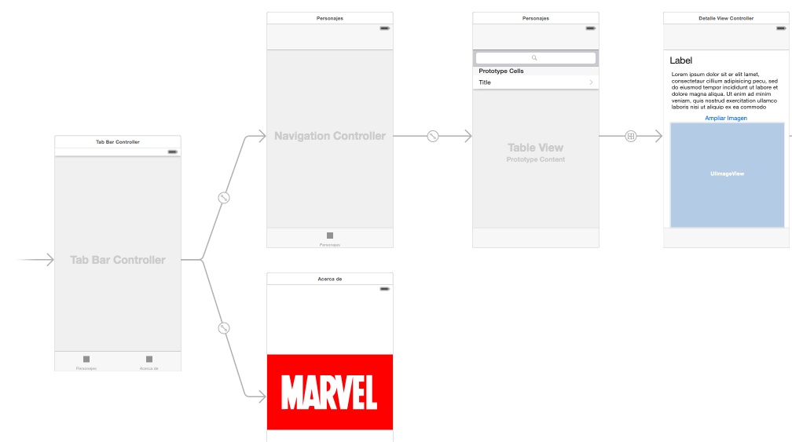

"Miniproyecto": app Marvel Cinematic Universe¶
Este "miniproyecto" trata de hacer una pequeña aplicación basándose en la API no oficial del Marvel Cinematic Universe (MCU), que nos permite consultar información sobre las películas de Marvel Studios.
Pasos iniciales¶
Creación del proyecto¶
La API es REST, por lo que acepta peticiones HTTP y devuelve los datos en JSON. No obstante todavía no hemos visto cómo hacer peticiones HTTP en iOS, ni tampoco cómo convertir los datos en JSON a structs de Swift. Para acelerar el trabajo en el aula tenéis disponible en moodle un zip con una serie de clases de utilidad para hacer las llamadas a la API y convertir los datos.
Tenéis que crear un nuevo proyecto "MCUPelis", y una vez creado añadir las clases incluidas en el .zip disponible en moodle:
- Para que el código esté mejor organizado, cread un nuevo grupo (una carpeta en el proyecto): botón derecho sobre el proyecto y en el menú contextual
New Group. Llamadloutilo similar ya que son clases de utilidad. - Botón derecho sobre la carpeta
utily en el menú contextual seleccionadAdd Files to MCUPelis.... Aparecerá un cuadro de diálogo para seleccionar los archivos a añadir al proyecto, podéis seleccionar varios pulsando la teclaCtrly clicando sobre ellos. IMPORTANTE: marcad la casillaDestination: copy items if neededpara que se copien los archivos, si no solo se hará un link a ellos pero no se copiarán físicamente y se perderán si borráis los originales.
Conversión de datos JSON
En la asignatura de Persistencia de Datos veremos cómo funciona la conversión de datos en JSON a structs Swift y viceversa, ya que JSON es un formato muy usado para almacenar o recuperar datos de archivos.
Para comprobar si la conexión con la API funciona bien puedes incluir el siguiente código en el viewDidLoad del ViewController:
let client = MCUAPIClient()
Task {
do {
let movies = try await client.searchMovies(title: "Spider", page: 1, limit: 50)
for movie in movies {
print(movie.title)
}
} catch {
print("Error: \(error)")
}
}
Si ejecutas la aplicación no verás nada en la pantalla del simulador pero en la consola de Xcode debería aparecer una lista de películas en cuyo título aparece la palabra "Spider".
El único método que tiene la clase MCUAPIClient es searchMovies, al que hay que pasar como parámetros el número de página de los restultados a obtener, el número de resultados por página y un fragmento de texto que buscamos en el título. Para simplificar la aplicación nos "quitaremos de enmedio" la paginación pasando como página la número 1 y pidiendo 50 resultados (de momento en el MCU solo hay 38 películas estrenadas).
Storyboard de la aplicación¶
Para que te hagas una idea de la estructura, se muestra el storyboard de la aplicación ya terminada

Puedes comenzar embebiendo la pantalla inicial que aparece en el storyboard en un tab bar: selecciónala y en el menú Editor elige Embed In > Tab Bar Controller.
Vista de lista (2 puntos)¶
Esta debe ser una pantalla con una barra de búsqueda y una vista de tabla en la que se puede buscar y listar películas por título. El resultado final será algo como:

Ve a la primera (y por el momento única) pantalla de contenido del tab bar, selecciona la barra inferior y en las propiedades bar item ponle un título apropiado (por ejemplo "Películas") y un icono relevante.
Si no te gusta ninguno de los SF Symbols que tienes disponibles en iOS, hay unas cuantas webs de donde puedes coger iconos "planos", por ejemplo https://www.iconfinder.com/iconsets/ios-7-icons o https://www.flaticon.com/uicons/interface-icons
Crear la interfaz¶
La tabla:
- Arrastra una table view a la pantalla de "películas"
- Selecciona la tabla y en las propiedades crea un prototipo de celda incrementando el
Prototype cellsa 1. - Selecciona el prototipo de celda recién creado (el
table view cell) y en las propiedades elige comostyleel valorBasic, para poder usar uno de los tipos predefinidos de celda y no tener que hacerlo tú. - Ya que estás, ponle un
identifiera la celda prototipo. Recuerda que era un identificador elegido por tí que luego tienes que usar en Swift para recuperar una celda "reciclada".
La barra de búsqueda no se inserta como componente visual sino por código, así que la dejamos de momento (cuidado, hay un search bar en la biblioteca de componentes pero es para versiones de iOS anteriores a la 13).
Nos falta fijar el autolayout. Queremos que la tabla ocupe toda el área de la pantalla. Para ello lo más sencillo es ponerle 4 restricciones de distancia 0 a los bordes.
Crear el controller¶
Vamos a crear un view controller para esta primera pantalla
- Crea una nueva clase de Cocoa Touch llamada
ListaControllery haz que sea una subclase deUIViewController - Asígnale ese controller en el storyboard a la pantalla con la tabla. Recuerda que esto se hace a través del
identity inspector(panel derecho de Xcode, cuarto icono).
Como decíamos, la barra de búsqueda se crea por código Swift. En iOS, desde la versión 13 esto se controla con la clase UISearchController. Este utiliza el patrón delegación para gestionar los eventos de escribir en la barra, pulsar "buscar" en el teclado, etc. El objeto que actúe como delegate del UISearchController debe implementar el protocolo UISearchResultsUpdating
Siguiendo la filosofía MVC (Monster View Controller 😅) para simplificar haremos que la barra de búsqueda esté en el view controller de la pantalla actual, y éste sea el delegate.
Crea en ListaController un outlet para la tabla, lo usaremos en un momento (aquí supondremos que lo llamas "tabla").
Declara un UISearchController en el ListaController , inicialízalo y establece sus propiedades en el viewDidLoad (al añadir el código Xcode se “quejará”" de que el controller no es conforme a UISearchResultsUpdating, lo arreglaremos a continuación).
//esto debería ser una propiedad de ListaController
var searchController : UISearchController!
override func viewDidLoad() {
super.viewDidLoad()
//..aquí podría haber más código
self.searchController = UISearchController(searchResultsController: nil)
//el delegate somos nosotros (ListaController)
self.searchController.searchResultsUpdater = self
//Configuramos el search controller
//esto sería true si quisiéramos mostrar los resultados de búsqueda en un sitio distinto a la tabla
self.searchController.obscuresBackgroundDuringPresentation = false
//lo que aparece en la barra de búsqueda antes de teclear nada
self.searchController.searchBar.placeholder = "Buscar título"
//Añadimos la barra de búsqueda a la tabla
self.searchController.searchBar.sizeToFit()
//SUPONIENDO que el outlet que has creado se llame "tabla"
self.tabla.tableHeaderView = searchController.searchBar
}
Añade UISearchResultsUpdating a la cabecera del controller para que pueda ser el delegate de la barra de búsqueda:
class ListaController: UIViewController, UISearchResultsUpdating {
...
}
Xcode
Al añadir el UISearchResultsUpdating Xcode se "quejará"" de que falta implementar el método updateSearchResults. Puedes darle al "fix" del mensaje de error o copiar el código que viene a continuación.
En el ListaController implementa el método updateSearchResults, que se llamará cuando se escriba algo en la barra. Con cada pulsación de tecla se llamará una vez al método. Para probar que funciona, de momento basta que imprimas en la consola el texto escrito en la barra.
func updateSearchResults(for searchController: UISearchController) {
let textoBuscado = searchController.searchBar.text!
//recortamos caracteres en blanco
let textoBuscadoTrim = textoBuscado.trimmingCharacters(in: .whitespacesAndNewlines)
print(textoBuscadoTrim)
}
Ejecuta la app y comprueba que efectivamente funciona lo hecho hasta ahora.
Throttling de las peticiones
Si con cada pulsación de tecla lanzas una búsqueda a la API, va a ser muy lento e ineficiente. Es mejor que la lances cuando el usuario deje de teclear, o dicho de otro modo, cuando hayan pasado X segundos sin escribir más caracteres. A esto se lo conoce como throttling.
Puedes usar esta implementación para no tener que escribirlo tú. Puedes añadirlo al proyecto con la opción de menú de File > Add Files to Marvel... seleccionando el archivo y asegurándote de que está marcada la opción de Copy items if needed (si no, incluirá solo una referencia al archivo pero no este en sí).
Una vez añadida la clase Throttler, puedes crear una instancia de la clase en ListaController:
let throttler = Throttler(minimumDelay: 0.5) //el delay está en segundos
y luego le puedes pasar a su método throttle en una clausura el código que quieras usar con throttling:
func updateSearchResults(for searchController: UISearchController) {
throttler.throttle {
let textoBuscado = searchController.searchBar.text!
let textoBuscadoTrim = textoBuscado.trimmingCharacters(in: .whitespacesAndNewlines)
print(textoBuscadoTrim)
}
}
Tras todo esto añade tu propio código Swift para que cuando cambie el texto de la barra se haga la llamada a la API del MCU. Recuerda que tienes que usar la clase MCUAPIClient y que en el ViewController tienes el ejemplo de cómo usarlo. Por el momento lo más simple es mostrar los resultados con print. Puedes asignárselos también a un array que sea una propiedad del controller, para que luego sean sencillos de mostrar en la tabla.
Mostrar los resultados en la tabla¶
Warning
Aquí los pasos ya no están tan detallados, ve poco a poco
Una vez verificado que funcionan las llamadas al API desde la barra de búsqeda, puedes hacer que los resultados aparezcan en la tabla. Recuerda que necesitas un datasource para ella, y que para simplificar puedes hacer que sea el ListaController. A grandes rasgos esto implica:
- Que, como decíamos antes, el controller debe tener acceso a los datos, por ejemplo guardándolos en una propiedad que sea un array de
Movie. - Que tienes que asignar el valor de la propiedad
datasourcede la tabla en elListaControlleraself(el view controller) (o conectar gráficamente en elconnections inspectorel outletdatasourcecon el controller) . - Que el
ListaControllerdebe implementar el protocoloUITableViewDataSource. Hay que poner en la cabecera que esto es así, y además implementar los correspondientes métodos en el código del controller, uno para devolver el número de filas en la tabla y otro para devolver una celda dado suindexPath(te debería ayudar Xcode con el stub de los métodos pero si no lo hace consulta los apuntes del tema de tablas o el ejercicio que hiciste en esa sesión). - Para hacerlo más eficiente, no llames al API si la longitud de lo escrito en el campo de texto es menor o igual que 2 (es una propuesta, si quieres puedes probar otro límite).
Cada vez que se haga una búsqueda y se guarden datos en el array tendrás que decirle a iOS que vuelva a redibujar la tabla llamando al método del table view llamado reloadData().
Una vez terminado todo esto, esta pantalla debería ser casi totalmente funcional. Solo quedaría ver los detalles de cada item al hacer tap sobre él.
Opcionalmente (0,25 puntos extra), puedes hacer que aparezca un spinner mientras se está procesando la petición, para que el usuario sepa que el sistema está esperando datos. Los spinners en iOS se denominan Activity Indicators. Tendrías que:
- Definir el activity indicator como variable miembro del
ListaControllervar miSpinner = UIActivityIndicatorView() - Fijar sus propiedades en el
viewDidLoad()//que se oculte automáticamente al pararse miSpinner.hidesWhenStopped = true //lo añadimos a la vista principal del controller actual self.view.addSubview(miSpinner) //lo centramos en la pantalla miSpinner.center.x = self.view.center.x miSpinner.center.y = self.view.center.y //nos aseguramos que está al frente y no tapado por la tabla self.view.bringSubviewToFront(self.miSpinner) - Para poner en marcha el activity indicator, llama a su método
startAnimating(), y para pararlo astopAnimating().
Vista de detalle (1,5 puntos)¶
La nueva pantalla mostrará los datos de una película al hacer tap. Como una vez en los detalles queremos poder volver atrás al listado de forma sencilla, lo mejor es usar un navigation controller:
El navigation controller¶
En este apartado todavía no estamos implementando la pantalla con la vista de detalle, solo creando la jerarquía de navegación.
- En el storyboard, selecciona la pantalla de lista y elige la opción de menú
Editor > Embed In > Navigation Controller. Aparecerá un nuevo navigation controller que tiene como primer nivel de navegación a la pantalla de lista de items. - Fijate que en la parte superior de la pantalla de búsqueda habrá aparecido un espacio reservado para el título y los botones de navegación. Selecciona esta barra de título y en las propiedades ponle el
title"Películas del MCU"".
La barra de búsqueda en un navigation controller debería estar en la barra de navegación de la parte superior. Nosotros la teníamos definida en la tabla. Quita estas líneas del viewDidLoad() de ListaController:
self.searchController.searchBar.sizeToFit()
self.tabla.tableHeaderView = searchController.searchBar
y pon esta nueva:
self.navigationItem.searchController = self.searchController
Creación de la interfaz y conexión con la pantalla de lista¶
Esta pantalla sería la que muestra los datos de un personaje, comic, creador,... junto a su imagen si es que la tiene.
- Arrastra un "view controller" al storyboard
- En la pantalla anterior, haz
ctrl+arrastrarentre la celda prototipo y la pantalla actual. Elige el tipo de segueShow. - Usa los componentes de UI que consideres necesarios para mostrar los datos de la película (no es necesario que sean todos, solo los que quieras, para probar que funciona). Tienes por ejemplo
overview(el argumento explicado brevemente), ladurationen minutos,boxOfficela recaudación en taquilla.... Al menos deberías mostrar la imagen del cartel (coverURL). Puedes mirar el código fuente deMovieen el archivoMCUAPIClientpara ver todos los campos, o también te los mostrará el autocompletar de Xcode. - La disposición de los elementos en pantalla es libre, pero deberías usar restricciones de autolayout para que no se descuadren demasiado si cambia la resolución de pantalla.
- Tendrás que crear un outlet para cada componente de UI, para poder luego rellenar su contenido
- Crea una nueva clase
DetalleControllerque herede deUIViewControllery asóciala a esta pantalla.
Implementación de la funcionalidad¶
- Define en el
DetalleControlleruna propiedad llamadapeliculade tipoMovie!(el opcional es para que la propiedad pueda estar vacía en algún moment) -
Define en
ListaControllerun métodoprepare(for:sender:), que se disparará al pasar de la pantalla de lista a la de detalle a través del segue de la celda:override func prepare(for segue: UIStoryboardSegue, sender: Any?) { } -
En este método tienes que pasarle el objeto a mostrar a
DetalleController. Para saber qué fila de la tabla se ha seleccionado puedes usar la propiedad del objeto tabla llamadaindexPathForSelectedRow, que almacena elindexPathde la fila seleccionada. La propiedadrowde este index path es el número de fila. - Tendrás que rellenar los outlets de los componentes de esta pantalla en el
viewDidLoaddelDetalleController. - Para mostrar la imagen con el cartel de la película: la URL de la imagen está en la propiedad
coverURL. La carga de la imagen deberías hacerla en un hilo secundario, para no paralizar la interfaz de usuario si la imagen tarda en cargarse. Aquí tienes el código casi literal (tendrás que cambiar alguna variable por las que tú uses)
let colaBackground = OperationQueue()
colaBackground.addOperation {
//SUPONIENDO que la variable con la película se llama "pelicula"
if let url = self.pelicula.coverURL {
do {
let datos = try Data(contentsOf: url)
if let img = UIImage(data: datos) {
OperationQueue.main.addOperation {
//suponiendo que el outlet de la imagen se llama "miImagen"
self.miImagen.image = img
}
}
}
catch {
}
}
}
Vista "Acerca de" (0,5 puntos)¶
Esta es la segunda de las pantallas del tab bar. Simplemente debe consistir en una imagen estática y un text view o un label con información sobre la aplicación.
Pon la imagen y el texto en un stack view vertical y añade estricciones de autolayout para que estén a 40 puntos de los márgenes